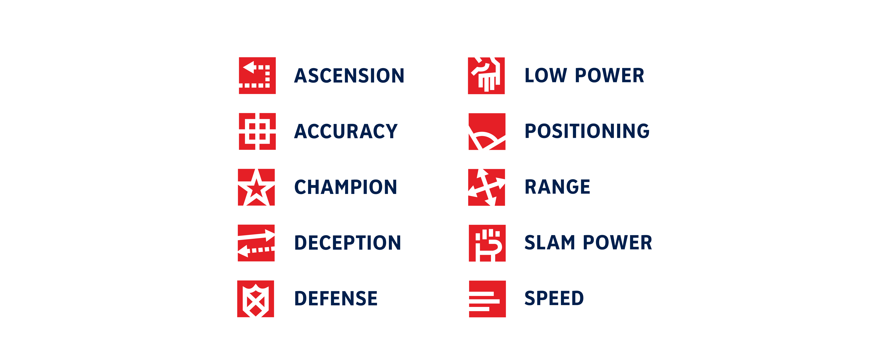
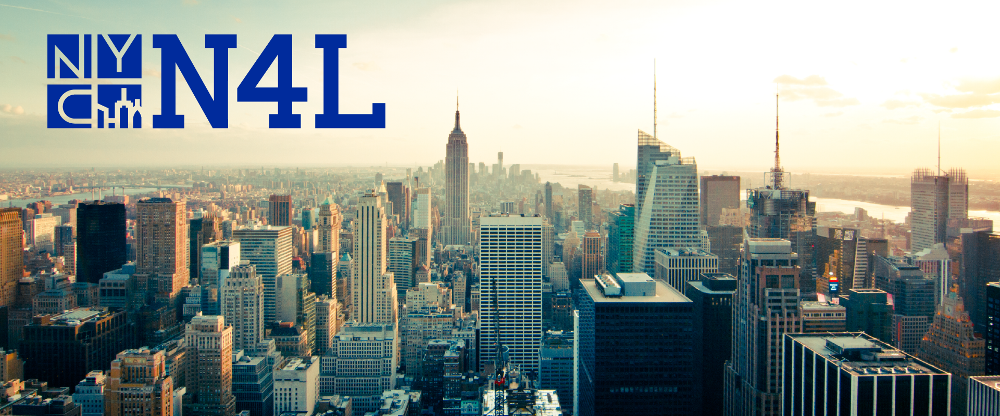
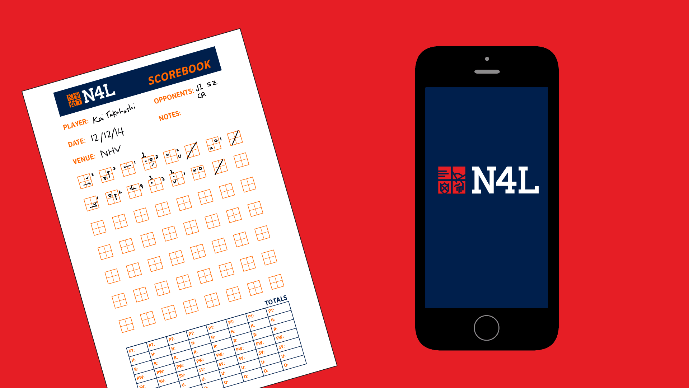
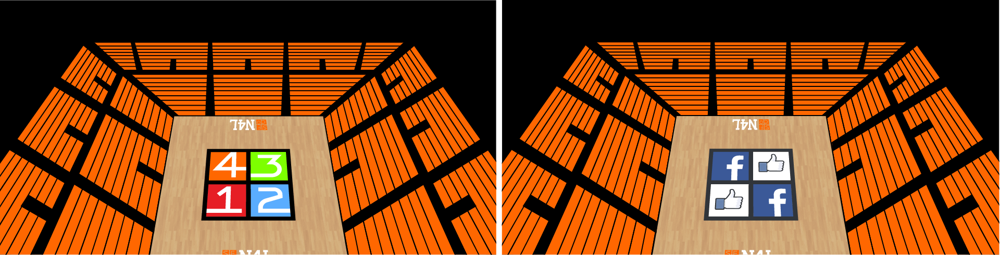

The National 4-Square League (N4L) is a potential professional sports league for everyone’s favorite playground game: four-square. As a league composed of individual players, a dynamic identity system is necessary to standardize the league brand while still differentiating the athletes. The brand identity is based upon the four squares and the lines of the court, as well as the 10 core elements of the game.
The Situation
Unlike the MLB or NBA, the N4L has no teams, only individuals. This puts it more along the lines of the PGA Tour (golf) and ATP World Tour (tennis), which don’t have the same brand awareness as the team-dominated leagues. But, they still boast some of the world’s most famous athletes, like Tiger Woods and Roger Federer, who have strong personal brands that are unaffiliated with the league. Four-square as a sport also lacks widespread awareness, tragically. This league would appeal to American sports fans and anybody who had a true childhood.
This was an individual project for Advanced Graphic Design at Yale with Henk van Assen. This project took up the second half of the fall semester (about 7 weeks) as one of my five classes. Without the resources of a professional sports league, I didn’t have the funds to actually create any of the uniforms or infrastructure.

The solution
One of the first choices I made was to style the name as the National 4-Square League, rather than Four-Square. This aligns the N4L more closely with dominant leagues like the MLB, NBA, NFL, MLS and NHL. Additionally, the use of the numeral 4 in the abbreviation is a unique feature that also conveys more meaning than an initial.
In order to strengthen the brand identity for the N4L, the players’ brands must be tied into the overall brand structure, which serves to strengthen the bond between player and league. I created a dynamic identity system that is applicable to both the league and to individual players and locations.
At the core of the identity is the square, the essential element of the four-square court that defines rank and boundaries. The primary identity is made up of 4 squares representing the four squares of the court. Each square module comes from one of the ten core elements of the game, and with monoline icons that mimic the boundary lines of the four-square court.
Each player logo is composed of their initials—using a custom monoline uppercase alphabet—two of their skills—which could be player-chosen or perhaps fan-driven—and two colors from an 11-color set. While initially I thought the colors should be completely up to choice, limiting the options allows for a more consolidated brand for the N4L. As a result, each player is choosing from a kit of parts, all part of the league identity. Each player has three uniforms to maximize on-court visibility and distinction: white, dark and alternate.


Like players, each competition venue would have its own unique logo, using an airport code or abbreviation, as well as a fourth square icon customized for each city.
I designed a scorecard system (along with a bunch of relevant statistics!) that fans could follow along with, much like scoring a baseball game.
I also did a rough sketch of how an app might function.
I imagined the playing surface as an interactive floor, that would light up when the ball bounced in a square (like a Simon Says game) to avoid confusion on the court. The squares would be color coded with the participating athletes. The interactive nature of the floor would lend well to advertisements as well.
